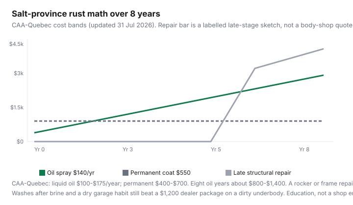

Transportation · Canada
Is rustproofing worth it in Canada’s salt provinces? Annual spray vs permanent coatings
Owners either buy a $1,200 dealer “lifetime” package on delivery day or do nothing until a rocker panel is lace. Road salt changes the ownership math in Ontario, Québec, the Maritimes, and Prairie cities that brine. CAA-Québec (updated 31 July 2026) still frames the choice as annual liquid oil versus heavier coatings — not a miracle module under the hood. This is a salt-province strategy: spray or coat on purpose, wash after brine, and treat dealer upsells as optional.
Winter spend sits beside winter maintenance, winter tires, and used vs new TCO. A rusty buy is a private-sale walk-away.
Disclosure: Rustproofing shops and membership discounts (for example CAA-Québec at partner locations) are offer types. Saving Optimizer may earn a commission if we later add partner links. We do not currently claim shop partnerships. Bands are not a quote.
Key takeaways
- CAA-Québec (31 Jul 2026): liquid oil $100–$175/year; semi-solid oil $150–$300; grease $350–$750; “permanent” $400–$700. Electronic modules: evidence is weak.
- Start in the first years, ideally August–October, on a clean, dry vehicle. Rain-day applications need a shop that can dry the underbody.
- A heated garage with a salted car speeds rust. Wash the underbody after brine, then park. Heat plus salt is not “being kind to the car.”
- Dealer undercoating sold at $500–$1,500 is a margin product. APA-style consumer advice has long favoured annual oil spray over a thick coat on a dirty day.
- Resale “I rustproofed” stories need inspection photos, not a faded decal. Buyers pay for clean seams, not a receipt.
Why road salt changes the ownership math
Paint chips, slush, and freeze–thaw let brine sit in seams. Corrosion warranties are limited and time-bound; they do not mean “salt is cosmetic.” Structural rust is a safety and inspection problem (and a used-car price cut). If you will keep the car past year six in a salt city, prevention is a line item like tires. If you will sell in year three to a buyer who never looks underneath, you are buying comfort.
Oil spray vs undercoating: cost and reapplication
| Type | Cadence | Band | Watch-out |
|---|---|---|---|
| Liquid oil | Every year | $100–$175 | Drip after; best penetration into cavities |
| Semi-solid oil | Less drip, still periodic | $150–$300 | Thicker — reaches fewer crevices |
| Grease | Heavier barrier | $350–$750 | Can block drains if sloppy |
| Permanent coat | One-time (quality matters) | $400–$700 | Prep and product quality are the whole product |
Eight years of $140 oil ≈ $1,120. That is the comparison to a one-time $550 coat and to a late rocker repair. Oil that is never reapplied is waxed nostalgia.

New vs used cars — when treatment still helps
New: factory coatings are a start, not a salt-province finish. CAA-Québec says even a new vehicle is not immune to gravel. Year one or two is cheaper than year six. Used: a hoist inspection first. Spraying over scale traps moisture. If the frames and brake lines are already orange lace, you are buying a used car problem, not a spray. EVs rust too — use a shop that will not soak high-voltage bits in the wrong product (CAA-Québec flags EV-appropriate treatments).
DIY washes and garage habits that matter more than marketing
- Wash the underbody when temperature allows, especially after brine events. Fenders and seams are where slush hides.
- Do not park a salted car in a hot garage as a “treat.” CAA-Québec: heat speeds corrosion; temperature swings add condensation.
- Touch chips (colour code on the door jamb) before they bloom.
- Mud flaps and distance from dump trucks are cheaper than a hood film you never clean.
These habits are why two identical VINs age differently on the same street.
Warranty and dealer upsell skepticism
Factory perforation warranties have inspections and exclusions. A dealer rust package can be required to keep their add-on warranty, not the factory one — read both PDFs. Consumer advocates have long noted large markups on day-one undercoating and the risk of coating a wet, dirty underbody. Decline on the spot; you can book an independent oil spray in September. Electronic “rust modules” do not have clear evidence as a substitute (CAA-Québec).
Resale impact anecdotes vs verified inspections
“I Krowned it every year” is a story. A buyer or PPI shop wants photos of seams, brake and fuel lines, and jack points. Keep invoices and annual photos. Do not expect a $2,000 premium because of a window decal. Expect fewer walk-aways when the rockers are intact. Private-sale listings that hide the rear quarters are telling you the spray did not happen, or did not matter.
A maintenance calendar for salt season
- August–October: book oil spray on a dry day (CAA-Québec’s window).
- First brine: underbody wash as soon as a bay is open.
- Mid-winter: another wash after a long slush week; check drains and door bottoms.
- April: wash, inspect chips, note anything a spray shop should see next fall.
- Every year you keep the car: reapply oil if that is the system you chose.
Keep vs skip: keep the car 6+ years in a salt city → annual oil or a quality coat plus washes. Selling in 24 months to a wholesale auction → do not fund a $1,400 dealer package. Safety rust (brakes, lines, structure) is never the skip.
Sources & date stamps
- CAA-Québec, rustproofing advice — types, $100–$175 oil, $400–$700 permanent, Aug–Oct timing, heated-garage warning, EV note. Updated 31 July 2026.
- APA rustproofing commentary — annual oil vs dealer wax/undercoat markups (consumer-education context).
- Companion winter-maintenance and used-car PPI guides (20 Sep 2026).
Frequently asked questions
How much is rustproofing in Canada?
CAA-Québec lists liquid oil at $100–$175 per year and permanent treatments at $400–$700 (31 July 2026). Dealer day-one packages can run higher. Get a written shop quote.
Is annual oil better than a lifetime dealer coat?
Oil reaches cavities and needs yearly refresh. A permanent coat is only as good as prep. Many consumer advocates prefer oil plus washes over a thick coat sold in the F&I office.
Do I rustproof a brand-new car?
If you will keep it in a salt province, starting early is the point. Factory paint is not a brine strategy. Wait until you own it — you can book September instead of signing at the desk.
Does a heated garage help?
Not if the car is salted. Heat and condensation speed rust. Wash first, then park inside.
Do electronic rust modules work?
CAA-Québec says the evidence does not clearly show they replace traditional treatment. Budget washes and a known spray before a $1,000 gadget.